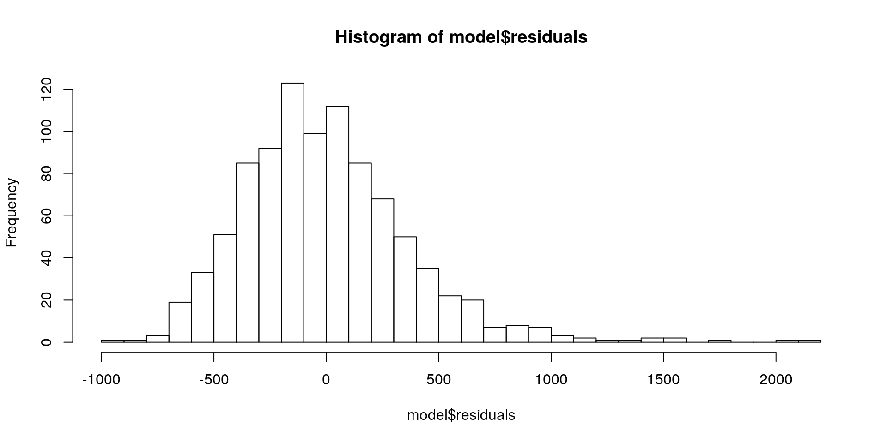
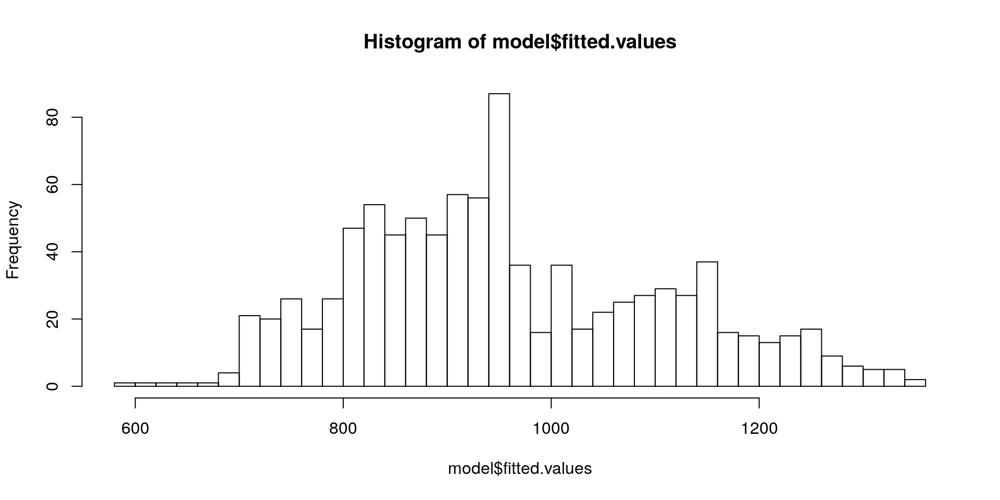

lm Functionlm(formula,
data,
subset,
na.action)formula - Specification of our regression model
data - The dataset containing the variables of the regression
subset - An option to subset the data
na.action - Option that specifies how to deal with missing values
formula ArgumentWe can write our models using the following syntax:
model = formula(regressand ~ regressors)Where regressand is just our dependent variable / response usually denoted by \(y\) and model is our formula of independent variables / regressors, e.g.:
happy_model = formula(happiness ~ age + income + n_children + married)We can construct formulas with the following syntax:
+formula(y ~ a + b):formula(y ~ a + b + a:b)a * b is equivalent to a + b + a:bformula(y ~ a + b + a:b) # and
formula(y ~ a*b) # are equivalentI()formula(y ~ a + I(a^2)) # quadratic term must be in I() to evaluate correctly
formula(y ~ log(a)) # log can stay by itself.formula(y ~ .) # is equivalent to
formula(y ~ a + b + ... + z) # for a dataset with variables from a to z-formula(y ~ .-a ) # is equivalent to
formula(y ~ b + c + ... + z)# for a dataset with variables from a to zsubset Argumentlm(formula,
data,
subset = age < 30)lm(formula,
data,
subset = age < 30 & height > 180)Note that although this works, a best-practice is to subset your data prior to the estimation. By keeping these steps distinct, your code will be much easier for someone else to understand.
na.action ArgumentIf the data contains missing values, lm automatically deletes the whole observation.
na.action = na.fail if you want an error when the data contains missing valuesAgain, it is a best-practice to look for missing values in your data prior to the estimation to keep your code transparent.
missmap function from the Amelia package to get a nice visualisation of missing values in your datalm with Wage Datawage_data <- read.csv2("data/offline/wages2.csv")
head(wage_data)## WAGE HOURS IQ SCORES EDUC EXPER TENURE AGE MARRIED BLACK SOUTH URBAN
## 1 769 40 93 35 12 11 2 31 1 0 0 1
## 2 808 50 119 41 18 11 16 37 1 0 0 1
## 3 825 40 108 46 14 11 9 33 1 0 0 1
## 4 650 40 96 32 12 13 7 32 1 0 0 1
## 5 562 40 74 27 11 14 5 34 1 0 0 1
## 6 1400 40 116 43 16 14 2 35 1 1 0 1m1 <- formula(WAGE ~ EDUC + EXPER)
model<- lm(formula = m1,
data = wage_data)lmThe lm function returns a list. Relevant components of this list are:
call - the function call that generated the outputcoefficients the OLS coefficientsresidualsfitted.values The estimates for our dpendent variable (WAGE)model The model matrix used for estimationThe full list of outputs can be looked up via
?lm()str(model) where model is our saved output from lm$ operator and tab, e.g. model$...Lets look up our coefficients \(\beta\), fitted values \(\hat{y}\) and OLS residuals \(\varepsilon\)
model$coefficients## (Intercept) EDUC EXPER
## -272.52786 76.21639 17.63777model$fitted.values[1:7] # first 7 fitted values## 1 2 3 4 5 6 7
## 836.0843 1293.3826 988.5170 871.3598 812.7812 1193.8631 718.9270model$residuals[1:7] # first 7 residuals## 1 2 3 4 5 6
## -67.08427 -485.38260 -163.51705 -221.35981 -250.78119 206.13686
## 7
## -118.92703We can visualise the results very simply with hist or plot:
hist(model$residuals, breaks = 30)
hist(model$fitted.values, breaks = 30)
lm with the summary() function##
## Call:
## lm(formula = m1, data = wage_data)
##
## Residuals:
## Min 1Q Median 3Q Max
## -924.38 -252.74 -40.88 198.16 2165.70
##
## Coefficients:
## Estimate Std. Error t value Pr(>|t|)
## (Intercept) -272.528 107.263 -2.541 0.0112 *
## EDUC 76.216 6.297 12.104 < 2e-16 ***
## EXPER 17.638 3.162 5.578 3.18e-08 ***
## ---
## Signif. codes: 0 '***' 0.001 '**' 0.01 '*' 0.05 '.' 0.1 ' ' 1
##
## Residual standard error: 376.3 on 932 degrees of freedom
## Multiple R-squared: 0.1359, Adjusted R-squared: 0.134
## F-statistic: 73.26 on 2 and 932 DF, p-value: < 2.2e-16stargazer()stargazer::stargazer(model, type = "text", style = "asr" )##
## -------------------------------------------
## WAGE
## -------------------------------------------
## EDUC 76.216***
## EXPER 17.638***
## Constant -272.528*
## N 935
## R2 0.136
## Adjusted R2 0.134
## Residual Std. Error 376.295 (df = 932)
## F Statistic 73.260*** (df = 2; 932)
## -------------------------------------------
## *p < .05; **p < .01; ***p < .001stargazer::stargazer(model,
type = "html",
out = "model.html")model2 <- lm(WAGE ~ EDUC + EXPER + IQ + SCORES, data = wage_data)
stargazer::stargazer(model, model2, type = "text", style = "asr")##
## -------------------------------------------------------------------
## WAGE
## (1) (2)
## -------------------------------------------------------------------
## EDUC 76.216*** 47.472***
## EXPER 17.638*** 13.733***
## IQ 3.795***
## SCORES 8.736***
## Constant -272.528* -536.848***
## N 935 935
## R2 0.136 0.182
## Adjusted R2 0.134 0.179
## Residual Std. Error 376.295 (df = 932) 366.466 (df = 930)
## F Statistic 73.260*** (df = 2; 932) 51.788*** (df = 4; 930)
## -------------------------------------------------------------------
## *p < .05; **p < .01; ***p < .001Specify the folder and file were your table should be saved as "path/name.type"
.html : Open the file in your web browser and copy it into Word.tex : Include in LaTeXWe can test for significance of single parameters with t-tests
EDUC has an influence on WAGEEDUC changes when more variables are addedWe can test for joint significance of a group of variables with F-tests
TENURE, EXPER and SCORES significant, once we control for personal variables like IQ and EDUCmodel3 <- lm(WAGE ~ IQ + EDUC, data = wage_data)
model4 <- lm(WAGE ~ IQ + EDUC + TENURE + EXPER + SCORES, data = wage_data)stargazer::stargazer(model3, model4, type = "text", style = "asr")##
## -------------------------------------------------------------------
## WAGE
## (1) (2)
## -------------------------------------------------------------------
## IQ 5.138*** 3.697***
## EDUC 42.058*** 47.270***
## TENURE 6.247*
## EXPER 11.859***
## SCORES 8.270***
## Constant -128.890 -531.039***
## N 935 935
## R2 0.134 0.188
## Adjusted R2 0.132 0.183
## Residual Std. Error 376.730 (df = 932) 365.393 (df = 929)
## F Statistic 72.015*** (df = 2; 932) 42.967*** (df = 5; 929)
## -------------------------------------------------------------------
## *p < .05; **p < .01; ***p < .001\(WAGE = \beta_0 + \beta_{1}IQ + \beta_{2}EDUC + \beta_{3}TENURE + \beta_{4}EXPER + \beta_{5}SCORES\)
TENURE, EXPER and SCORES is zero:\[ H_0: \beta_{3} = \beta_{4} = \beta_{5} = 0 \\ H_1: H_0 \text{ is not true}\]
Since OLS minimises the \(SSR\), the \(SSR\) always increases if we drop variables. The question is, if that increase is significant.
\[ F = \frac{SSR_r - SSR_{ur}/q}{SSR_{ur} / (n-k-1)} \sim F_{q, n-k-1} \\ q = \text{number of restrictions} \\ k = \text{number of parameters}\]
If the \(H_0\) is true, our test statistic follows the \(F-Distribution\) and we can calculate p-values for our test.
anova(model3, model4)## Analysis of Variance Table
##
## Model 1: WAGE ~ IQ + EDUC
## Model 2: WAGE ~ IQ + EDUC + TENURE + EXPER + SCORES
## Res.Df RSS Df Sum of Sq F Pr(>F)
## 1 932 132274591
## 2 929 124032931 3 8241660 20.576 6.495e-13 ***
## ---
## Signif. codes: 0 '***' 0.001 '**' 0.01 '*' 0.05 '.' 0.1 ' ' 1